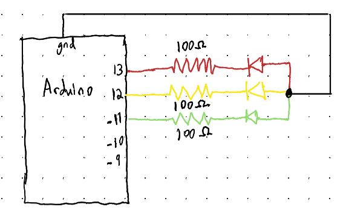
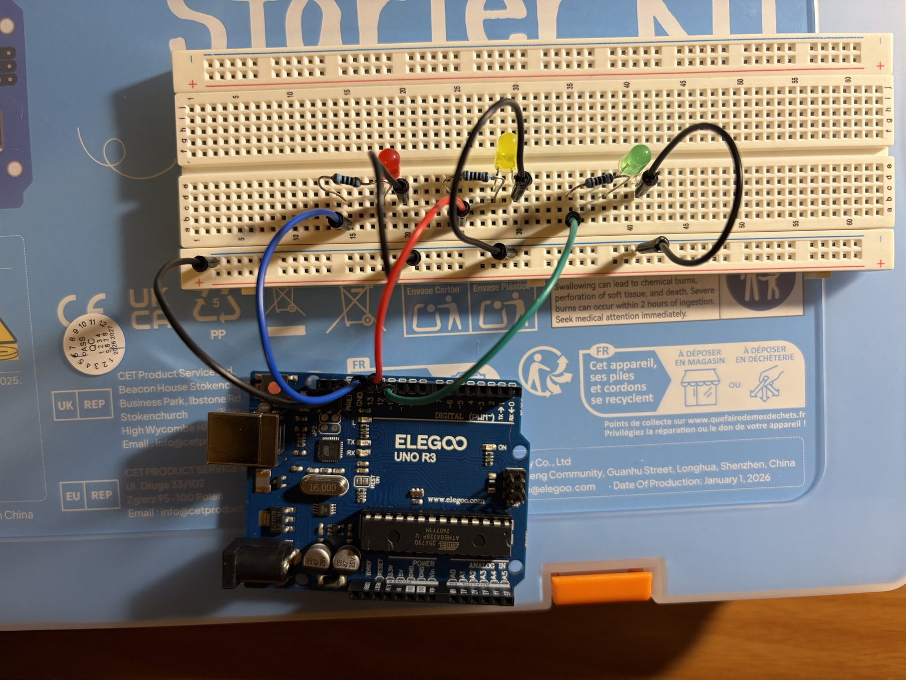
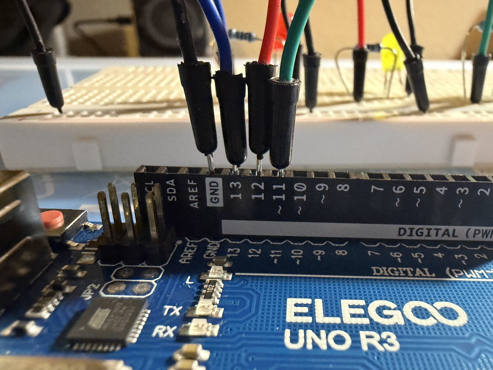
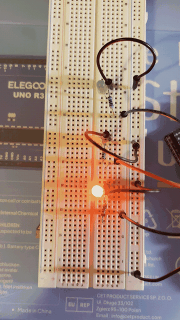
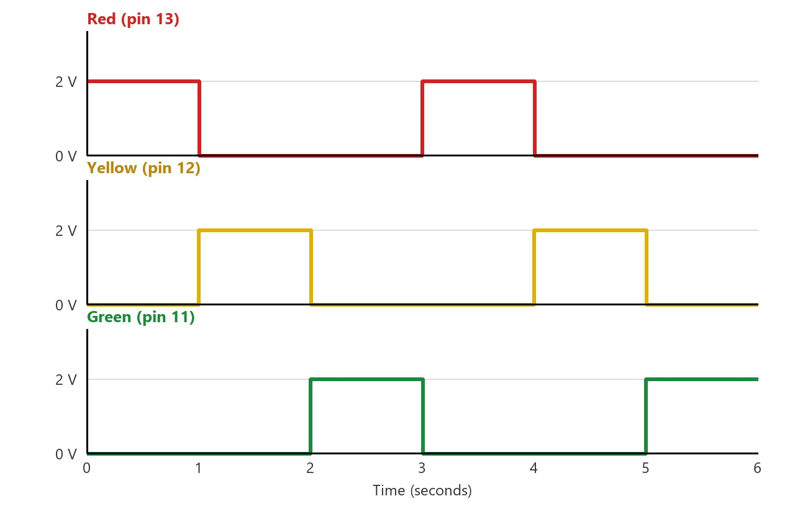

A three-LED "traffic light" chase pattern for the holiday light company: red, yellow, and green LEDs light up one at a time, each for one second, in a repeating loop.

Each branch of the circuit has an LED and a resistor and they are wired in parallel between their Arduino pin and a shared ground. Since they are in parallel, each branch receives 5 V from its pin.
Kirchhoff's Voltage Law for one branch (pin → resistor → LED → ground):
Vs = VR + Vl VR = Vs − Vl = 5 V − 2 V = 3 V
Ohm's Law for the resistor, which carries the same current as the LED in series with it:
R = VR / I = 3 V / 0.020 A = 150 Ω
So to keep each LED at 20 mA, they need a 150 Ω resistor. The kit doesn't include a 150 Ω resistor, so I rounded up to the next available value, 220 Ω. Rounding up keeps the current safely under the LEDs' rating:
I = VR / R = 3 V / 220 Ω ≈ 0.014 A = 14 mA
At about 14 mA per LED, the LEDs are still bright, and the current is under both the LEDs' 20 mA rating and the Arduino pin's 40 mA maximum.


// Store the pin number for the LEDs
const int LED_1 = 13;
const int LED_2 = 12;
const int LED_3 = 11;
void setup() {
// Configure the LED pins as an output so it can supply voltage
pinMode (LED_1, OUTPUT);
pinMode (LED_2, OUTPUT);
pinMode (LED_3, OUTPUT);
}
void loop() {
// Turn the red LED on (pin set to 5V) and the other LEDs off (pin set to 0V)
digitalWrite (LED_1, HIGH);
digitalWrite (LED_2, LOW);
digitalWrite (LED_3, LOW);
// Hold this state for 1000 milliseconds (1 second)
delay (1000);
// Turn the yellow LED on (pin set to 5V) and the other LEDs off (pin set to 0V)
digitalWrite (LED_1, LOW);
digitalWrite (LED_2, HIGH);
digitalWrite (LED_3, LOW);
// Hold this state for 1 second
delay (1000);
// Turn the green LED on (pin set to 5V) and the other LEDs off (pin set to 0V)
digitalWrite (LED_1, LOW);
digitalWrite (LED_2, LOW);
digitalWrite (LED_3, HIGH);
// Hold this state for 1 second, then loop() starts over with red
delay (1000);
}
Each LED has about 2 V (its forward voltage) across it while its pin is HIGH and 0 V while its pin is LOW. The pattern repeats every 3 seconds.

The Arduino Uno has 20 digital I/O pins (D0–D13 & A0–A5). However, pins D0 & D1 are for USB meaning that I would be able to blink 18 LEDs independently simultaneously with one on each pin. To calculate current draw I would do 18 × 20 mA = 360 mA. This is more than the Arduino's 200 mA limit so to light them all at once I would require larger resistors or to activate them in a pattern where only a few LEDs are on at once.
I tested my vision by changing the delay() values for a circuit with a single LED. When
the delay was 20 ms (25 blinks per second) I could still see the light flicker. However, when I
changed the delay() to 10 ms (~50 blinks per second) the LED looked like it was
constantly on just dimmer. So an LED needs to blink at least 50 times a second before
I can no longer tell they are blinking.
Yes. I used AI tools to help me format & build the documentation page and compress the GIF so that it was small enough for GitHub.